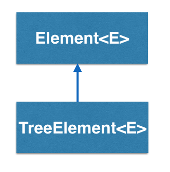

How does the TreeElement<E> work?
TreeElement<E> is a superclass for tree structures and can represent tree structures
with arbitrary number of children at each node. The top node of the tree is
referred to as the "root".

In the example above, root node has 3 children, while its children has 2, 1 and 0 children
respectively. The childrent of a node is accessed by by set/getChild() methods, with an index
k, referring to its k'th child.
See also
This tutorial gives an introduction to the usage of trees. You can find the complete documentation of the features in the Doxygen documentation of the following classes and functions:
- TreeElement [Java] [C++] [Python]
- Element [Java] [C++] [Python]
- ElementVisualizer [Java] [C++] [Python]
- LinkVisualizer [Java] [C++] [Python]
- Color [Java] [C++] [Python]
TreeElement - BRIDGES Example
Example Details
- This example illustrates construction of a tree structure with a variable number of children (currently set to a maximum of 10).
- Children are added using the addChild() method, with ordering of children from left to right and accessed by an integer index (begining at 0).
- In the example, a small tree is built, visual attributes assigned and visualized.
Here is the final code:
Java
C++
Python
Bridges Visualization
- Once all your code is in order, run your program.
- Assuming all your code is correct and it compiles correctly, a link to the Bridges website will be generated.
- Copy/paste this link into your favorite browser to view a visualization of the data structure you’ve just created.
- It should look something like this:
Well done! You’ve just created your Bridges Tree project!